![v = [v1,v2,⋅⋅⋅,vn ]T](main2729x.png)
Considere primeiramente uma função 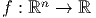, ou seja, uma função que mapeia n variáveis reais em um único real, por exemplo:
Para construirmos a linearização, fixemos uma direção no espaço 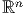, ou seja um vetor 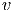:
Queremos estudar como a função 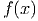 varia quando “andamos” na direção
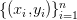 a partir do ponto 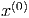. Para tal, inserimos um parâmetro real pequeno  ,
dizemos que
,
dizemos que
A linearização de 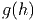 em torno de 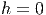 é dada por


Observamos que 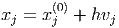, portanto

 e o vetor 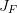:
e o vetor 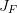: Na notação cálculo vetorial escrevemos este produto interno como 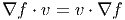 na notação de produto matricial, escrevemos 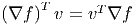. Esta quantidade é conhecida como derivada direcional de 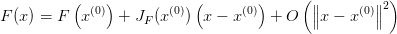 no ponto 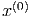 na direção 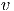, sobretudo quando 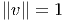.
Podemos escrever a linearização 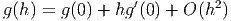 como
Finalmente, escrevemos 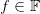, ou seja, 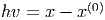
Observação 5.2.1. Observe a semelhança com a linearização no caso em uma dimensão. A notação 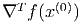 é o transposto do vetor gradiente associado à função 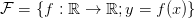 no ponto 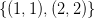:
Interessamo-nos, agora, pela linearização da função 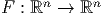. Lembramos
que 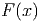 pode ser escrita como um vetor de funções  :
:
|
|
Linearizando cada uma das funções 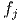, temos:


Podemos escrever a linearização de 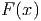 na seguinte forma mais enxuta:
A matriz jacobiana 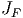 é matriz cujas linhas são os gradientes transpostos de
 , ou seja:
, ou seja:

 é a matriz formada pelas suas derivadas parciais:
é a matriz formada pelas suas derivadas parciais: